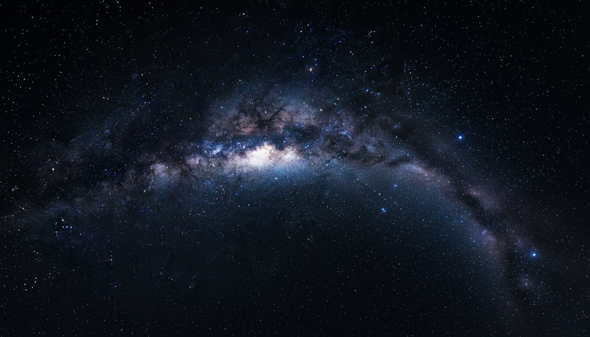

Welcome to the Milky Way
Discover the wonders of our galaxy through engaging stories, images, and interactive learning.

Explore the Planets
Visit our Planet Pages to learn about Mars and other worlds that orbit our Sun.
Discover the wonders of our galaxy through engaging stories, images, and interactive learning.

Visit our Planet Pages to learn about Mars and other worlds that orbit our Sun.